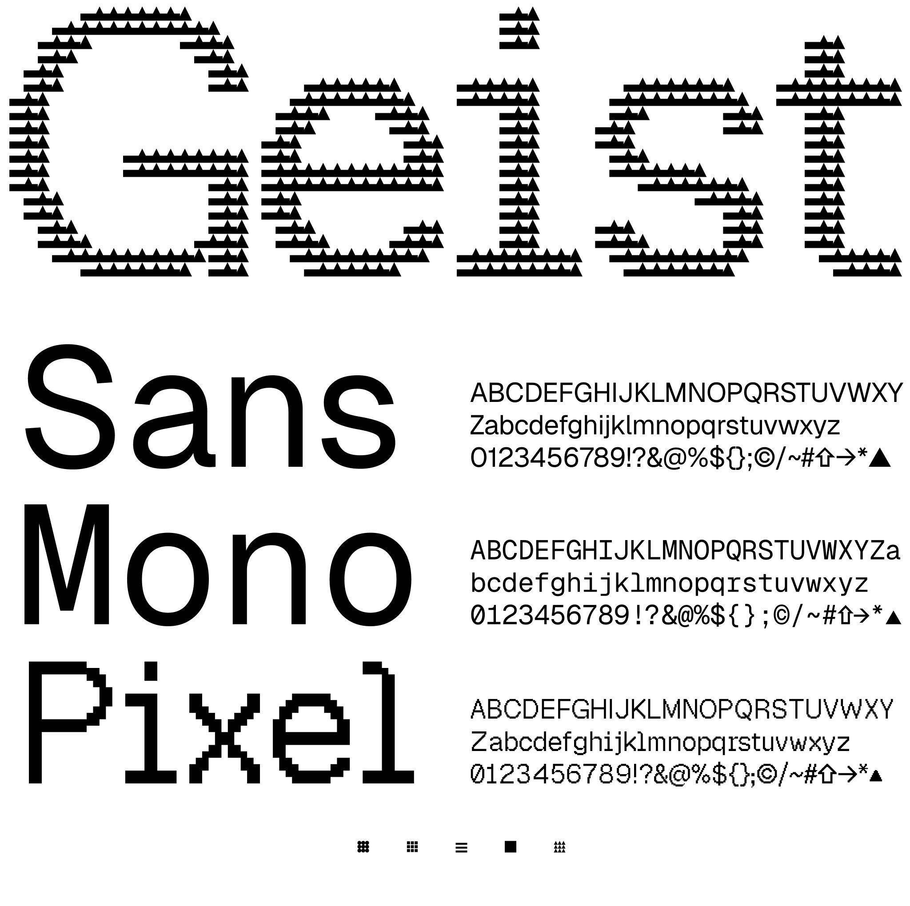

Geist Pixel is a display typeface family of five pixel-based styles, each with a distinct visual character. It joins Vercel's Geist family alongside its sans-serif and monospace counterparts, Geist and Geist Mono.
The five styles — Square, Circle, Grid, Triangle, and Line — each build letters from a different pixel element, giving every variant its own look. Geist Pixel is made for decorative use in headlines, logos, and other display contexts where a pixelated aesthetic is desired.
Created by Vercel, Geist embodies their design principles of simplicity, minimalism, and speed, drawing inspiration from the renowned Swiss design movement. To contribute, see github.com/vercel/geist-font.
